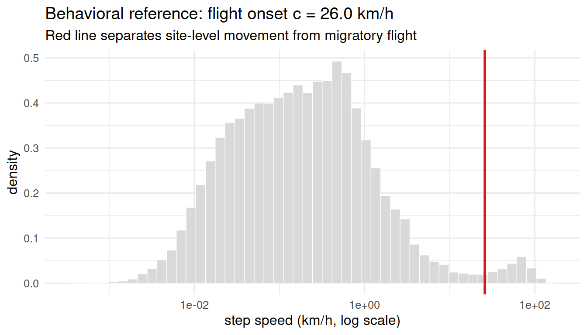
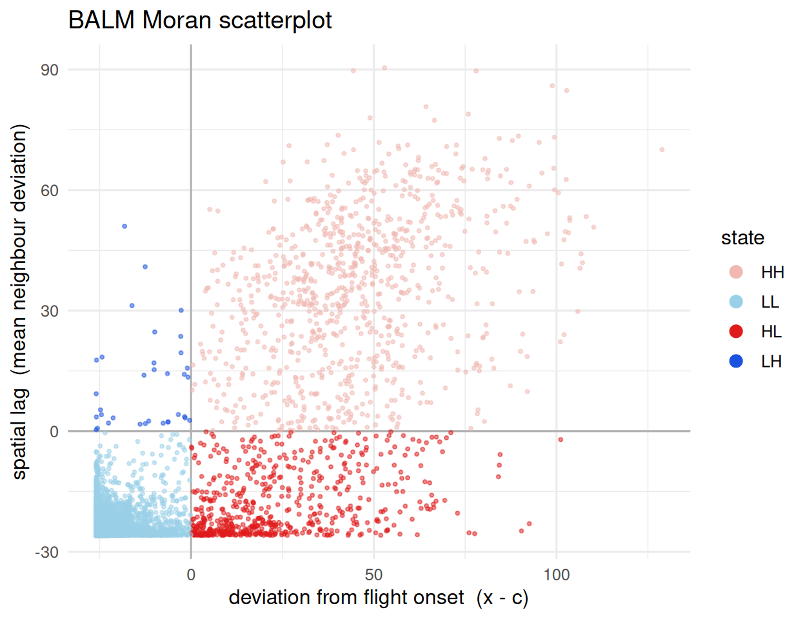
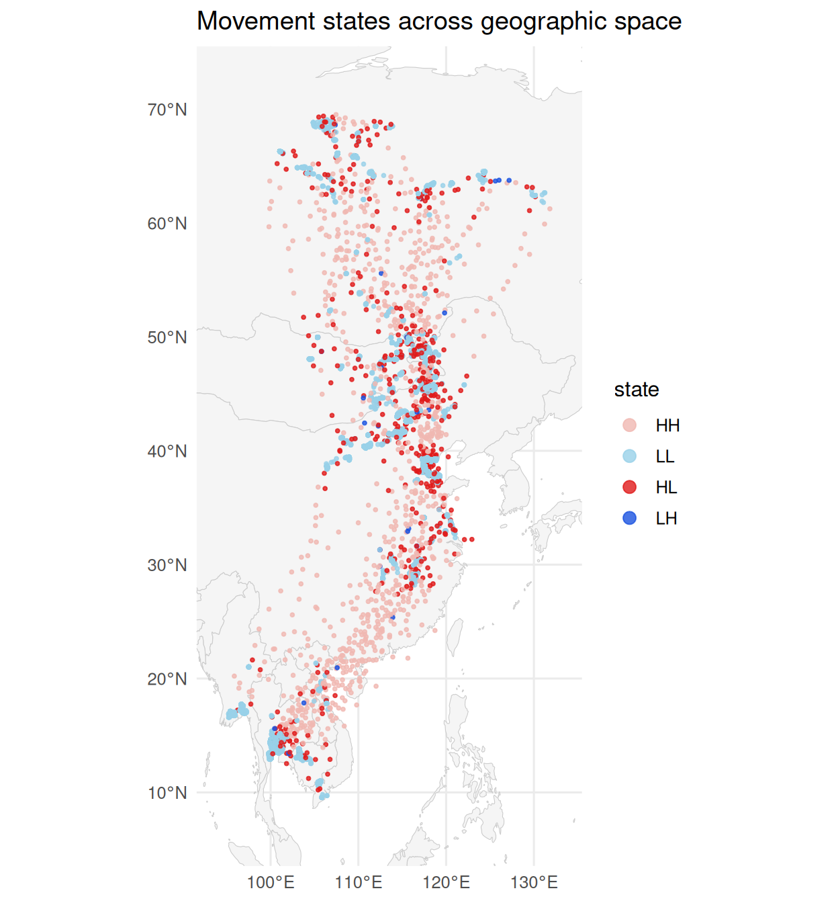

Overview
balm_segmentation() classifies each tracking fix into a movement state using BALM (Behaviorally-Anchored Local Moran), a movement-adapted variant of the Local Moran scatterplot. It uses only point locations and a movement-rate mark – never direction or the raw temporal sequence – so it is invariant to fix ordering and robust to sampling-rate heterogeneity.
Each fix is labelled by the signs of its deviation from a behavioral reference c (the migratory-flight onset) and its spatial lag:
- HH – fast fix among fast neighbours -> active migration
- LL – slow fix among slow neighbours -> stationary site
- HL – fast fix among slow neighbours -> local movement within a site (commuting / foraging burst)
- LH – slow fix among fast neighbours -> brief touch-down in the migratory corridor (transient stopover)
Two choices distinguish BALM from the textbook Local Moran: the high/low reference is a data-driven behavioral threshold (the flight-onset speed) rather than the arithmetic mean, and classification is deterministic (no permutation significance) – spatial support is arbitrated downstream by density clustering (dbscan_habitats()).
Setup
Movement rate
godwit <- compute_step_speed(godwit_demo,
time_col = "time",
individual_col = "individual",
direction = "centered")Segmentation
seg <- balm_segmentation(godwit,
variable_col = "step_speed",
individual_col = "individual",
verbose = FALSE)
table(seg$cluster_type, useNA = "ifany")
#>
#> HH LL HL LH
#> 878 59894 604 34
attr(seg, "balm_reference") # flight-onset reference c (km/h)
#> Black-tailed Godwit 23_02 Black-tailed Godwit 23_03 Black-tailed Godwit 23_05
#> 25.95689 25.95689 25.95689
#> Black-tailed Godwit 23_06 Black-tailed Godwit 23_07 Black-tailed Godwit 23_08
#> 25.95689 25.95689 25.95689
#> Black-tailed Godwit 23_11 Black-tailed Godwit 23_16 Black-tailed Godwit 23_21
#> 25.95689 25.95689 25.95689
#> Black-tailed Godwit 23_22
#> 25.95689Where the high/low reference comes from
The reference c is the flight-onset speed – detected as the left foot of the right-most peak of the (log) step-speed density, i.e. the boundary between site-level movement and migratory flight.
ref <- attr(seg, "balm_reference")[[1]]
spd <- godwit$step_speed[is.finite(godwit$step_speed) & godwit$step_speed > 0]
ggplot(data.frame(spd = spd), aes(spd)) +
geom_histogram(aes(y = after_stat(density)), bins = 50,
fill = "grey85", colour = "white", linewidth = 0.2) +
geom_vline(xintercept = ref, colour = "#D7191C", linewidth = 1) +
scale_x_log10() +
labs(x = "step speed (km/h, log scale)", y = "density",
title = sprintf("Behavioral reference: flight onset c = %.1f km/h", ref),
subtitle = "Red line separates site-level movement from migratory flight") +
theme_minimal(base_size = 12)
The BALM Moran scatterplot
Each fix is placed by its own deviation x - c (x-axis) against the mean deviation of its spatial neighbours (y-axis); the four quadrants are the four movement states.
cluster_pal <- c(HH = "#F0B8B1", LL = "#99D0E8", HL = "#E01B1B", LH = "#1B53E0")
ggplot(sf::st_drop_geometry(seg),
aes(balm_deviation, balm_lag, colour = cluster_type)) +
geom_hline(yintercept = 0, colour = "grey70") +
geom_vline(xintercept = 0, colour = "grey70") +
geom_point(alpha = 0.5, size = 0.7) +
scale_colour_manual(values = cluster_pal, name = "state", na.translate = FALSE) +
guides(colour = guide_legend(override.aes = list(size = 3, alpha = 1))) +
labs(x = "deviation from flight onset (x - c)",
y = "spatial lag (mean neighbour deviation)",
title = "BALM Moran scatterplot") +
theme_minimal(base_size = 12)
Spatial result
world <- rnaturalearth::ne_countries(scale = "medium", returnclass = "sf")
bb <- sf::st_bbox(seg)
padx <- as.numeric(bb["xmax"] - bb["xmin"]) * 0.10
pady <- as.numeric(bb["ymax"] - bb["ymin"]) * 0.10
ggplot() +
geom_sf(data = world, fill = "grey96", colour = "grey80", linewidth = 0.2) +
geom_sf(data = seg, aes(colour = cluster_type), size = 0.7, alpha = 0.8) +
scale_colour_manual(values = cluster_pal, name = "state", na.translate = FALSE) +
coord_sf(xlim = c(bb["xmin"] - padx, bb["xmax"] + padx),
ylim = c(bb["ymin"] - pady, bb["ymax"] + pady), expand = FALSE) +
guides(colour = guide_legend(override.aes = list(size = 3))) +
labs(title = "Movement states across geographic space") +
theme_minimal(base_size = 12)
Stationary subset for downstream analysis
The LL (stationary cores) and LH (transient stopovers) fixes are the input to spatial habitat delineation:
Discussion
BALM asks “is this fix part of a spatial cluster of high (or low) movement rate”, using spatial structure alone. The behavioral signature of migration – fast, transient passage – manifests spatially as high-rate fixes in sparse corridors (HH), whereas fast movements confined to a site appear as HL outliers; no explicit measure of direction is required.
See also
-
vignette("v01-data-overview")– full workflow -
vignette("v03-dbscan-habitats")– downstream clustering of LL/LH points
Session info
sessionInfo()
#> R version 4.6.0 (2026-04-24)
#> Platform: x86_64-pc-linux-gnu
#> Running under: Ubuntu 24.04.4 LTS
#>
#> Matrix products: default
#> BLAS: /usr/lib/x86_64-linux-gnu/openblas-pthread/libblas.so.3
#> LAPACK: /usr/lib/x86_64-linux-gnu/openblas-pthread/libopenblasp-r0.3.26.so; LAPACK version 3.12.0
#>
#> locale:
#> [1] LC_CTYPE=C.UTF-8 LC_NUMERIC=C LC_TIME=C.UTF-8
#> [4] LC_COLLATE=C.UTF-8 LC_MONETARY=C.UTF-8 LC_MESSAGES=C.UTF-8
#> [7] LC_PAPER=C.UTF-8 LC_NAME=C LC_ADDRESS=C
#> [10] LC_TELEPHONE=C LC_MEASUREMENT=C.UTF-8 LC_IDENTIFICATION=C
#>
#> time zone: UTC
#> tzcode source: system (glibc)
#>
#> attached base packages:
#> [1] stats graphics grDevices utils datasets methods base
#>
#> other attached packages:
#> [1] ggplot2_4.0.3 sf_1.1-1 movepp_0.1.4
#>
#> loaded via a namespace (and not attached):
#> [1] gtable_0.3.6 jsonlite_2.0.0 dplyr_1.2.1
#> [4] compiler_4.6.0 tidyselect_1.2.1 Rcpp_1.1.1-1.1
#> [7] scales_1.4.0 yaml_2.3.12 fastmap_1.2.0
#> [10] dbscan_1.2.5 R6_2.6.1 labeling_0.4.3
#> [13] generics_0.1.4 classInt_0.4-11 s2_1.1.11
#> [16] knitr_1.51 tibble_3.3.1 units_1.0-1
#> [19] DBI_1.3.0 pillar_1.11.1 RColorBrewer_1.1-3
#> [22] rlang_1.2.0 xfun_0.58 S7_0.2.2
#> [25] rnaturalearth_1.2.0 otel_0.2.0 cli_3.6.6
#> [28] withr_3.0.2 magrittr_2.0.5 wk_0.9.5
#> [31] class_7.3-23 digest_0.6.39 grid_4.6.0
#> [34] mclust_6.1.2 lifecycle_1.0.5 vctrs_0.7.3
#> [37] KernSmooth_2.23-26 proxy_0.4-29 evaluate_1.0.5
#> [40] glue_1.8.1 farver_2.1.2 rnaturalearthdata_1.0.0
#> [43] e1071_1.7-17 rmarkdown_2.31 tools_4.6.0
#> [46] pkgconfig_2.0.3 htmltools_0.5.9